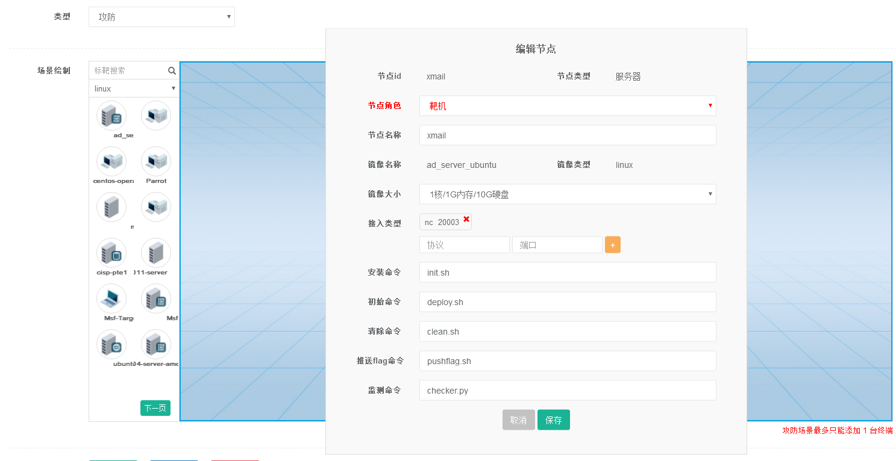

在攻防模式CTF赛制中，参赛队伍在网络空间互相进行攻击和防守，挖掘网络服务漏洞并攻击对手服务来得分，修补自身服务漏洞进行防御来避免丢分。 攻防场景即CTF攻防场景，实现了场景的快速部署、清除、检测、Flag推送等内容的描述的结构化数据。
场景结构
场景由场景拓扑和资源文件组成，按照规定的格式打包成zip文件即可。该zip内文件结构如下：
xxx.zip ---|--- server1/ ---|---install.sh
---|---init.sh
---|---clean.sh
---|---flag.sh
---|---checker.py
---|---www/
---|---db.sql
资源文件 - 运行场景需要的资源文件,如Web代码、二进制文件等 - 场景安装脚本文件 - 场景初始化脚本文件 - 场景清除脚本 - 场景Flag推送脚本 - 场景检测脚本 |
python的Scrip执行返回格式，{“status”:”up”,”msg”,”xxxxx”}或{“status”:”down”,”msg”,”xxxxx”}
镜像大小flavor 支持列表
m1.1c-0.5g-8g / 1核/512M内存/8G硬盘
m1.1c-1g-8g / 1核/1G内存/8G硬盘
m2.1c-0.5g-10g / 1核/512M内存/10G硬盘
m2.1c-1g-10g / 1核/1G内存/10G硬盘
m2.2c-2g-10g / 2核/2G内存/10G硬盘
m2.2c-4g-10g / 2核/3G内存/10G硬盘
m3.1c-1g-20g / 1核/1G内存/20G硬盘
m3.1c-2g-20g / 1核/2G内存/20G硬盘
m3.2c-4g-20g / 2核/4G内存/20G硬盘
m3.4c-4g-20g / 4核/4G内存/20G硬盘
m4.1c-1g-40g / 1核/1G内存/40G硬盘
m4.2c-2g-40g / 2核/2G内存/40G硬盘
m4.4c-4g-40g / 4核/4G内存/40G硬盘
m4.4c-8g-40g / 4核/8G内存/40G硬盘
m5.4c-4g-80g / 4核/4G内存/80G硬盘
m5.4c-8g-80g / 4核/8G内存/80G硬盘
变量
资源文件脚本可传递变量
变量调用形式
{我是变量名}
全局变量
- PLATFORM_IP、PLATFORM_PORT OJ平台地址ip和prot，作用范围： 初始化脚本
- FLAG[*] 平台发放给场景的动态flag FLAG[0] 为第一个flag, 作用范围： 初始化脚本
局部变量
- 网络元件id
- 服务器ip 虚拟机在网络上分配的ip,预先分配的，调用初始化脚本时已获得 例vm-op.network-in.ip,作用范围： 初始化脚本
DIY攻防场景
- 页面DIY

新建场景时选择场景类型为攻防 添加终端节点：选择左侧节点，拖入右侧。 添加checker/attacker机器，编辑节点，选择节点角色为执行者
使用下面公钥，配置root免密码登录
ssh-rsa AAAAB3NzaC1yc2EAAAADAQABAAABAQCzdxH+vGCGs0N0I00jLD5msaumnJLwfs9Tzo5vIv2+mDAjjM70nsJZUN0Dtl4Uw7PRAl7ZMYZa8Oi0J1dc6R1M8tGWodhm8esGr+3UsnEdPFC8B82XRKst7ocQVuxu4X8wGrzDh2KXBY3TU0YWUCtCWicICGb92BwS3Yk+rNiAD6sNaIBk1ZPXAbHzqHBEWLiRbcIAgFMA5S9ZZaXL2jAZLryvmkSYWCML9zrciY+2IppZ84XqNItj6Skfagy/7TVjBjd2yEPE2NKOY+3Ba4eqVO0rgOO2KFJRDtJ1Shu83BMP7vvTdvKHbGvMX7deVPHF66vOFnKI2aNUuYNdhqQP root@localhost.localdomain
添加xctf用户
useradd xctf
管理员模式
管理员在后台测试申请时，除场景配置的登录方式以外，新增提供管理员所有标靶默认的登录方式，提供测试方式。
注意项
- 目前仅支持一个网卡，多网卡无法智能判断添加默认路由。
- 目前仅支持一台虚拟终端的攻防场景。